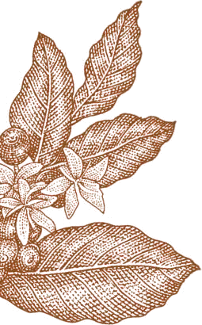
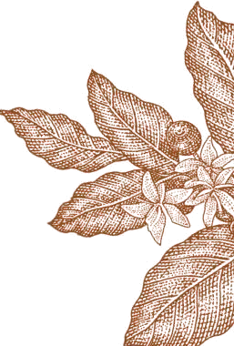
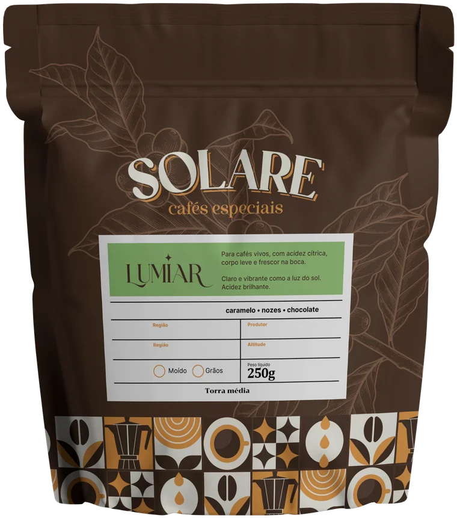
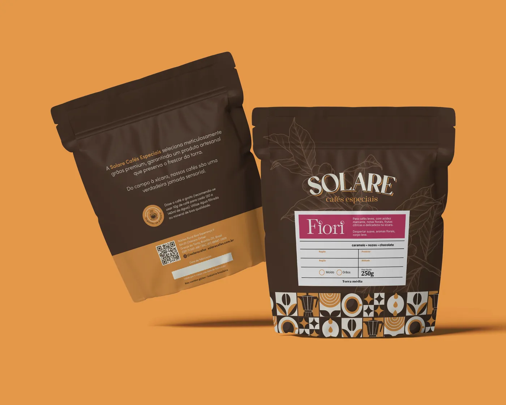
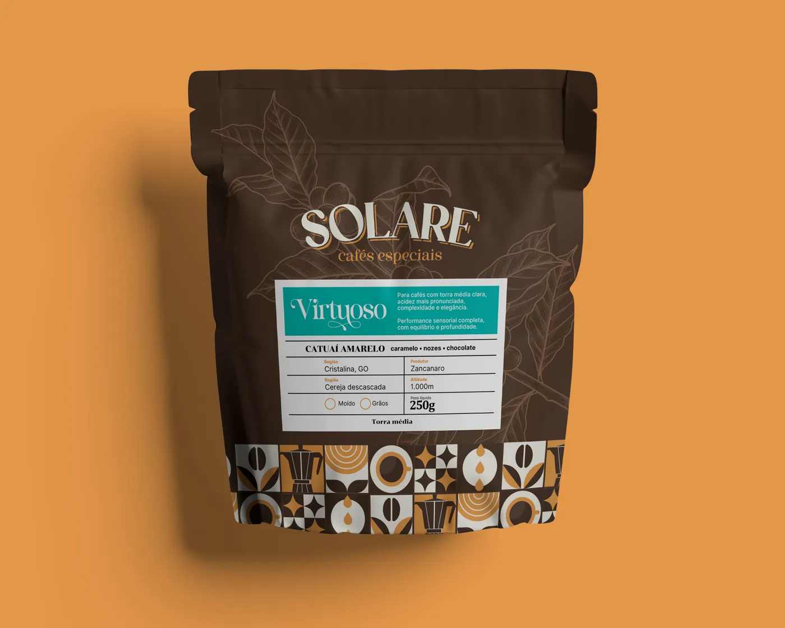
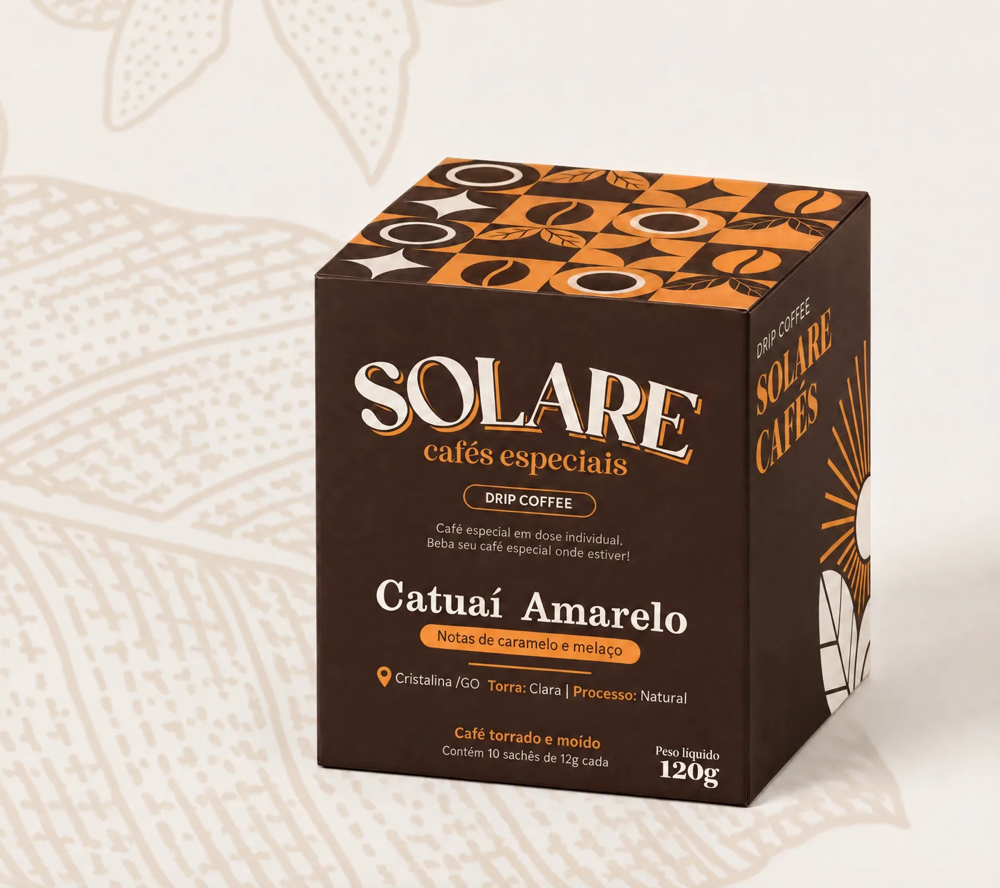
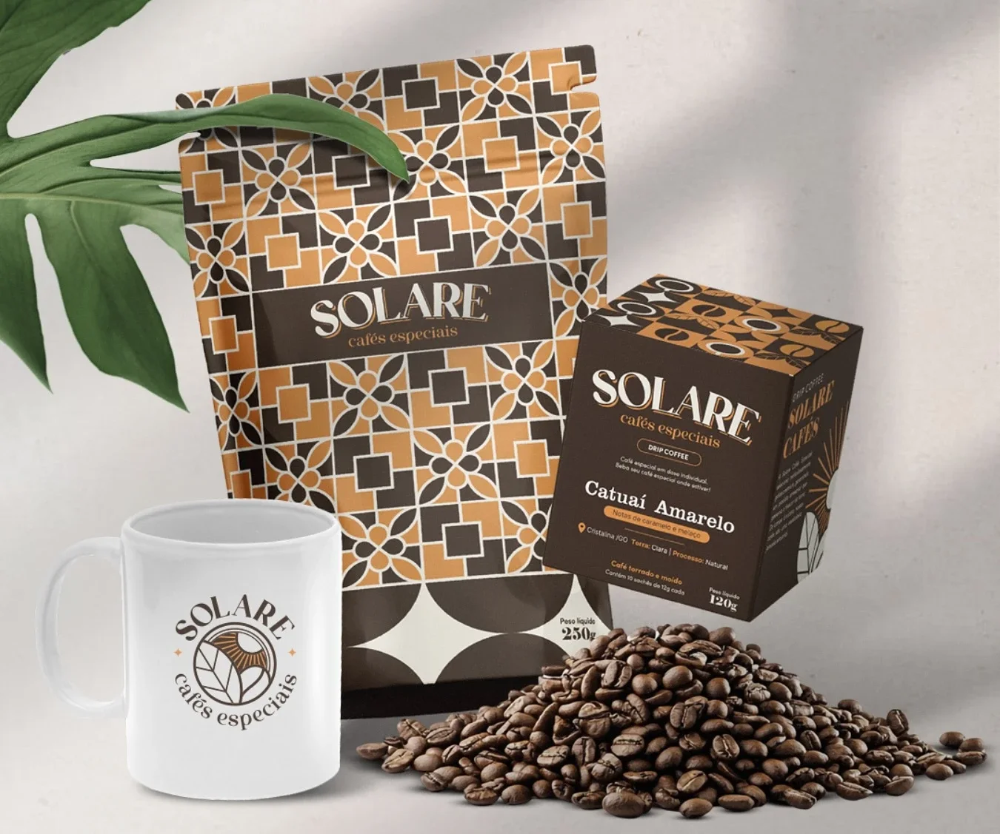
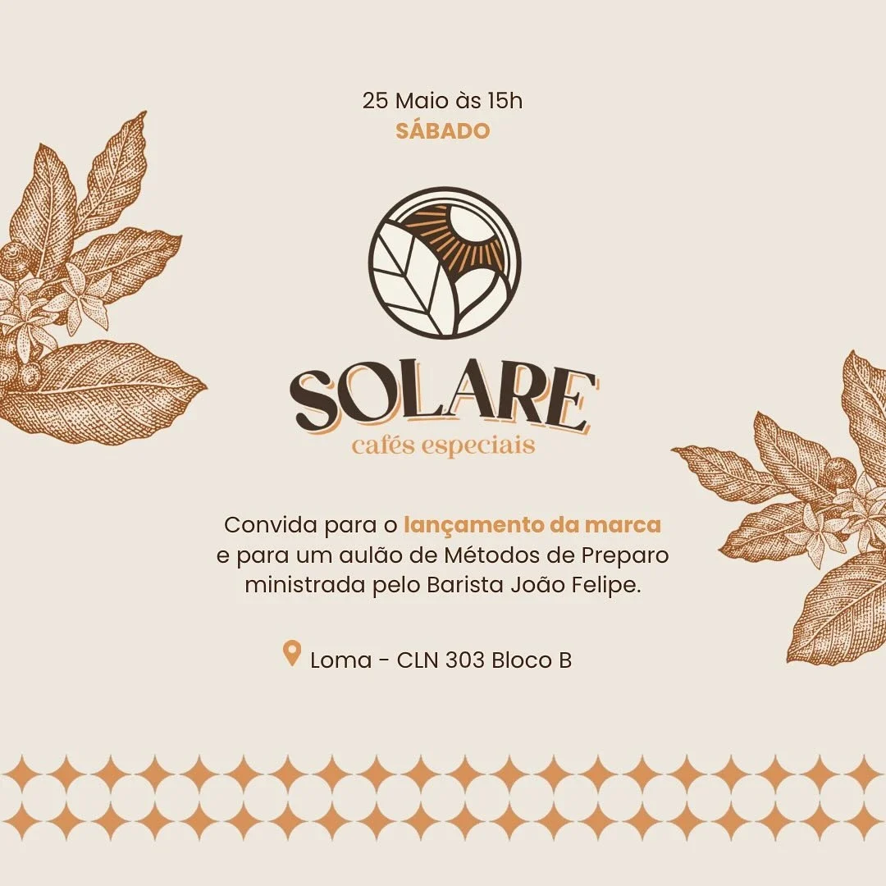
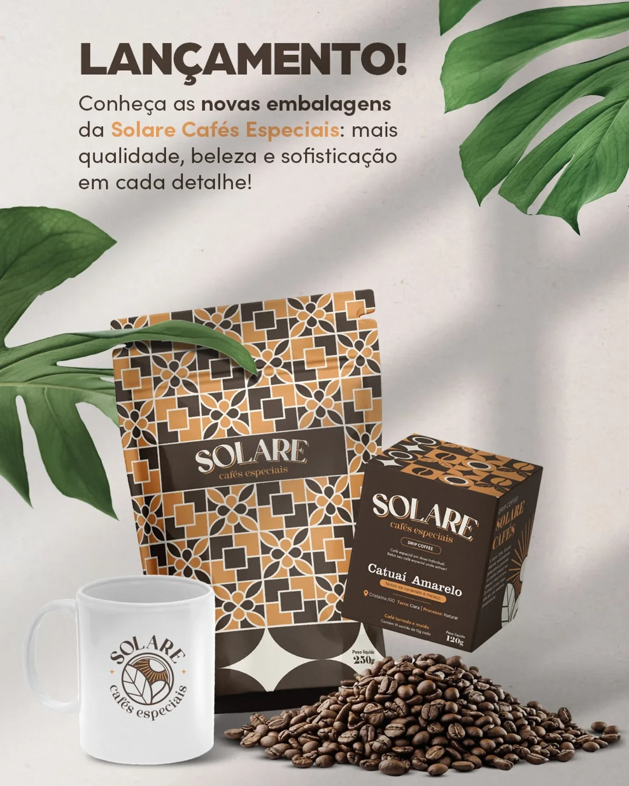

01
Cafeterias e restaurantes
Grãos especiais para o seu cardápio, com fornecimento recorrente.

Cafés especiais · Brasília/DF
Cafés especiais de todo o Brasil e da nossa produção própria em Brasília, escolhidos a dedo e torrados com um perfil único para cada café.


Linha Lumiar
A Solare
A Solare nasceu em Brasília para aproximar quem aprecia café de grãos com origem, cuidado e personalidade. Cada café é escolhido pela xícara que entrega: doce, equilibrada e cheia de luz.
Nossos cafés
Embalagens novas, inspiradas nos azulejos que contam a história do café no Brasil. Cada linha reúne cafés de origens diferentes com o mesmo perfil sensorial. E ainda vêm por aí blends e linhas especiais.
Perfil chocolate
Para cafés vivos, com acidez cítrica, corpo leve e frescor na boca.
Claro e vibrante como a luz do sol. Acidez brilhante.
Os cafés e as torras de cada linha mudam ao longo do tempo. Consulte pelo WhatsApp qual está disponível.

Perfil floral
Para cafés leves, com acidez marcante, notas florais, frutas cítricas e delicadeza na xícara.
Despertar suave, aromas florais, corpo leve.
Os cafés e as torras de cada linha mudam ao longo do tempo. Consulte pelo WhatsApp qual está disponível.

Perfil frutado
Para cafés com torra média clara, acidez mais pronunciada, complexidade e elegância.
Performance sensorial completa, com equilíbrio e profundidade.
Os cafés e as torras de cada linha mudam ao longo do tempo. Consulte pelo WhatsApp qual está disponível.
Perfil caramelo e melaço
Para cafés com doçura evidente, extremamente agradável, entregando uma bebida equilibrada e de finalização longa e prazerosa.
Os cafés e as torras de cada linha mudam ao longo do tempo. Consulte pelo WhatsApp qual está disponível.
Cafés raros e de pontuação alta
Perfil sensorial doce, destacando notas de caramelo e melaço.
Torra especialmente desenhada para a extração de um espresso encorpado, doce e prazeroso.
Os cafés e as torras de cada linha mudam ao longo do tempo. Consulte pelo WhatsApp qual está disponível.

Drip coffee · Dose individual
Café especial em dose individual. Beba seu café especial onde estiver: no trabalho, na viagem, no meio da trilha.
Sachês de 12 g, na dose certa para uma xícara.
O drip pode ser feito com café de qualquer linha Solare. Consulte pelo WhatsApp qual está disponível.

Kit presente
Lumiar 250 g, Drip Coffee e a caneca Solare. Para quem ama café, ou para você se dar esse presente.
Em breve
Estamos preparando um jeito novo de ter a Solare sempre por perto: cafés especiais escolhidos a dedo pelo nosso Mestre de Torras, entregues na sua casa, sem precisar pedir de novo.
Seja dos primeiros a saber quando a assinatura chegar.
Do pé à xícara
Onde tiver café bom, é de lá que a Solare recebe seus cafés, do Norte ao Sul do país. E tem também produção própria, aqui no DF. Cada lote é escolhido pela xícara que entrega e vai para a linha do seu perfil sensorial.
E de onde mais tiver café bom.


Cafés de todas as regiões do Brasil, colhidos no ponto certo de maturação, quando o fruto está doce.

Depois da colheita, o café seca devagar, ao sol. É nessa etapa que o grão ganha doçura e corpo.

Nosso Mestre de Torras desenvolve um perfil de torra para cada café, valorizando suas qualidades, que variam muito conforme o processamento, a altitude, a variedade e outros fatores. Cada café é enaltecido na sua torra!

Em grãos, moído na medida do seu método ou em sachês de drip coffee para levar aonde for.
Métodos de preparo
Escolha o método e quantas xícaras quer passar. A gente calcula a receita.


 Sugestão: Linha Fiori
Sugestão: Linha Fiori


Experiências Solare
A Solare chegou a Brasília com festa: um lançamento com aulão de métodos de preparo conduzido pelo Mestre de Torras João Felipe e pela equipe de baristas da Solare. Queremos levar essa experiência a mais gente — degustações, aulões e cafés especiais no seu evento.
Para empresas
Do café do escritório ao cardápio da sua cafeteria. Conte o que você precisa e a gente monta a proposta.
Grãos especiais para o seu cardápio, com fornecimento recorrente.

Cafés especiais e máquinas superautomáticas para a sua equipe.
Kits com pacote, drip coffee e caneca para clientes e equipes.

Aulões de preparo e degustações guiadas para o seu público.
Dúvidas
Não encontrou o que procurava? Chame a gente no WhatsApp.
Um café especial começa muito antes da xícara. Nasce em terras altas, onde o sol amadurece cada grão sem pressa. É colhido no tempo certo, escolhido a dedo e tratado com cuidado. Na torra, revela aromas de fruta, flor, caramelo ou chocolate que já moravam nele. É especial porque guarda, em cada gole, a história de quem o cultivou.
Segundo a BSCA (Associação Brasileira de Cafés Especiais), são grãos isentos de impurezas e defeitos que possuem atributos sensoriais diferenciados, incluindo bebida limpa e doce, corpo e acidez equilibrados, que qualificam sua bebida acima dos 80 pontos na análise sensorial. Além disso, os cafés especiais devem ter rastreabilidade certificada e respeitar critérios de sustentabilidade ambiental, econômica e social em todas as etapas da produção.
De todo o Brasil. Onde tiver café bom, é de lá que a Solare recebe seus cafés: Norte, Nordeste, Centro-Oeste, Sudeste e Sul do Brasil. E temos também produção própria, aqui no DF.
Se você tem moedor, prefira em grãos: o aroma dura mais. Se não tem, peça moído e conte como prepara o seu café — a moagem certa faz toda a diferença no resultado.
É um sachê com café moído que se encaixa na borda da xícara. Você despeja água quente aos poucos e, em cerca de dois minutos, tem um café coado na hora, sem nenhum equipamento. Perfeito para o trabalho e para viagens.
Mantenha o pacote bem fechado, longe da luz, do calor e da umidade — e fora da geladeira. Depois de aberto, o ideal é consumir em até 30 dias para aproveitar o melhor do aroma.
Sim. Atendemos Brasília e enviamos para outras cidades. Prazo e frete são informados no WhatsApp, de acordo com o seu endereço.
Sim. Montamos kits corporativos e presentes, além de aulões e degustações. Conte a quantidade e a data no WhatsApp e enviamos uma proposta.
Responda algumas perguntas rápidas e continue a conversa no WhatsApp, já com o seu pedido anotado.